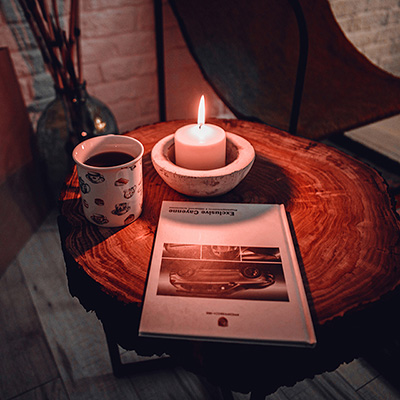

Мебель в стиле минимализм зачастую проста и лаконична. Сам по себе минимализм в интерьере подразумевает использование ровных геометрических форм и минимум деталей и украшений. Однако, несмотря на всю простоту, этот стиль достаточно часто привлекает внимание как самих дизайнеров, так и владельцев помещений. Многие, приходя домой, предпочитают чувствовать уют и комфорт. Для этого как нельзя лучше подойдет стиль минимализма, так как в нем нет ядовитых и кричащих деталей, которые спустя некоторое время могут доставлять дискомфорт. Современный минимализм выполнен в пастельных цветах, а акцентирование внимания достигается за счет игры полутонов. Основным и главным цветом в интерьере является белый, нередко его используют в сочетании с черным, темно-коричневым и темно-синим.
Если хорошо присмотреться к материалам, из которых выполнены предметы интерьера, то это скорее всего будет дерево, матовое стекло, хромированная сталь. Основное требование, которое нужно учитывать, — это то, что мебель в стиле минимализм всегда функциональна. Концепция минимализма состоит в том, чтобы обеспечить помещение максимальным пространством, а этого можно достичь именно благодаря мебели, которая должна выполнять все необходимые функции. Стол, люстры, диван в стиле минимализм и многие другие вещи в интерьере должны гармонично сочетаться и при этом быть функциональными.
Спальня в стиле минимализм
Оформляя интерьер спальни в стиле минимализм, необходимо учитывать, что кровать в этом помещении будет занимать главное место и ей необходимо уделить как можно больше внимания, хорошо продумать идею оформления в деталях. Низкая кровать в японском стиле станет отличным выбором, который выгодно сможет передать атмосферу минимализма и его основную идею. Декорировать кровать нет необходимости, так как сам по себе этот стиль интерьера не предусматривает большого количества различных деталей. Именно в этом случае уместно выражение «все гениальное — просто». Довольно интересно, свежо и необычно выглядит конструкция, в которой кровать как будто бы парит в воздухе и находится на некотором расстоянии от пола. Добиться такого эффекта можно благодаря специальным крепежам и опорам, которые находятся у изголовья. Часто в таких конструкциях присутствует вмонтированная подсветка, придающая помещению необходимое рассеянное освещение. Освещение и сама висящая кровать являются так называемой изюминкой в помещении.
В некоторых случаях дизайнер может заменить кровать обыкновенным матрацем. Такое дизайнерское решение отлично передает идею минималистического стиля. Эталоном минимализма также принято считать конструкцию в стиле классика с простыми геометричными формами, выполненную чаще всего из натурального дерева. Интересно выглядит большая черная или шоколадная кровать, стоящая посередине белоснежной комнаты. Кровать-подиум — это отличный многофункциональный вариант, так как под ней можно выделить место для хранения каких-нибудь вещей, например, можно установить интересные боксы для постельного белья.
Мебели в стиле минимализм не должно быть много, скорее наоборот, как можно меньше, и она должна выполнять разные функции. Допустимо ограничиться кроватью и небольшим журнальным столиком, однако у каждого дома должно быть место, куда можно сложить вещи. Для этого дополните интерьер модульными стенками, по цвету подходящими к общей картине. В таких модульных конструкциях обязательно должно быть максимум скрытых отсеков, в которые можно поместить необходимые вещи. Шкафы-купе тоже могут занять достойное место в интерьере такого стиля, однако их также необходимо вмонтировать в стену.
Минимализм — это стиль, в котором убираются границы, и спальня может плавно перетекать в столовое помещение и кухню. В некоторых случаях расширяют даже форму окна, делая его от пола до потолка, тем самым увеличивая пространство и впуская в помещение как можно больше света. Декор окон заключается только в шторах, которые выполнены из легких тканей, таких как лен, органза, шелк или же отсутствуют вовсе. Некоторые дизайнеры отдают предпочтение римским шторам и ролл-шторам.
Мебель для кухни и столовой
Выполняя кухню в данном стиле, особое внимание следует уделить освещению. Люстры и лампы в стиле минимализм следует подбирать в соответствии с основной идеей, чаще всего они выполнены в виде прямоугольных или круглых форм. При помощи таких осветительных приборов можно отлично выделить обеденную зону. Не следует забывать о пространстве, которого в минимализме должно быть как можно больше. Прекрасно впишутся в интерьер минимализма потолочные люстры. Они достаточно компактны, однако имеют небольшой минус: чтобы заменить в таких люстрах лампочку, необходимо забраться практически под потолок. Но и это можно не считать недостатком. Если у вас небольшое помещение с низкими потолками, потолочные люстры будут смотреться прекрасно.
Люстры в стиле минимализм выполнены из таких материалов, как пластик, стекло, керамика и металл. Одной из их особенностей являются элементы крепления к потолку и полное отсутствие декора. Основная функция, которую должны выполнять люстры в этом стиле — максимальное количество света. Нередко в своих идеях оформители интерьера используют модели с открытыми плафонами.
Довольно эффектно в этом стиле выглядит стеклянный стол, который должен расположиться обязательно по центру кухонного помещения. Форма такого стола должна быть круглой, овальной или правильной прямоугольной. Стулья можно расположить вокруг него и оформить в цветовой гамме интерьера. Идеальная столешница должна быть выполнена из натурального камня, такого как мрамор или оникс, или любого другого. Все вещи и детали интерьера гостиной в стиле минимализм должны нести определенный смысл и выполнять свою функцию. Цветовая гамма такой кухни обычно состоит из 2 или 3 цветов, не более. Линии выполнены ровно и четко.
Ванная комната в минимализме
Оформляя ванную комнату в стиле минимализм, необходимо минимизировать всю мебель и сделать ее как можно компактнее и функциональнее. Основные моменты, на которые нужно обратить внимание — цветовая палитра, а также строгие и ровные формы. В ванной комнате такого типа вещи максимально укомплектованы, некоторые дизайнеры умудряются объединить несколько предметов интерьера в один, таким образом увеличивая наличие пространства, которое так важно в минимализме. Например, можно соединить в одну конструкцию раковину, корзину для грязного белья и место для вмонтирования стиральной машины в один предмет интерьера. Люстру предпочтительнее выбрать потолочную, которая поможет зрительно увеличить пространство. Подсветка может присутствовать не только на потолке, но и на полу и в стенах.
Мелкие вещи, детали и декор и вовсе отсутствуют в такой ванной. Приветствуются подвесные конструкции, такие как сушилка для полотенец, однако и небольшие тумбочки под раковину тоже достаточно приемлемо смотрятся.
минимализм в Алматы
Источник: luckydecor.ru